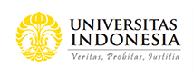
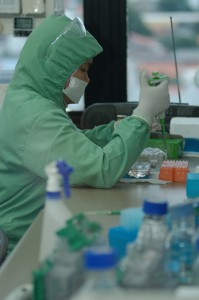

|  | ||
| Beranda Tentang UI Penelitian dan Informasi Akademik Penerimaan Hubungi Kami | ||
Penelitian |
||
|
Proses belajar mengajar kampus saat ini mendapat dukungan tenaga akademik profesional sejumlah 3000 orang dengan komposisi 400 orang diantara adalah guru besar dengan spesialisasi masing-masing disiplin keilmuan. Harapannya, tak lain tak bukan adalah UI sanggup menjadi center of excellence dunia riset dan ilmu pengetahuan Asia. Dengan kondisi terkini, UI berhasil memegang peran penting sebagai mesin pengetahuan dan inovasi yang selalu bergerak dan bertansformasi lebih maju. Semua itu tak lepas atas peran dan dukungan lebih dari 100 pusat kajian yang bernaung dibawah payung Direktorat Riset dan Pengabdian Masyarakat Universitas Indonesia. Atmosfer riset UI juga mendapat dukungan penuh kebijakan Majelis Wali Amanat, yang telah mengamanahkan roadmap 2007-2010 yang menekankan riset, pengajaran yang bersifat multi disiplin dengan fokus pada pembangunan berkesinambungan dengan fokus kepada Teknologi Nano, Teknologi Genom, Teknologi Komunikasi dan Informasi, Studi Kebijakan. Data statistik penelitian di lingkungan universitas |
||
|
hak cipta © Universitas Indonesia |
||